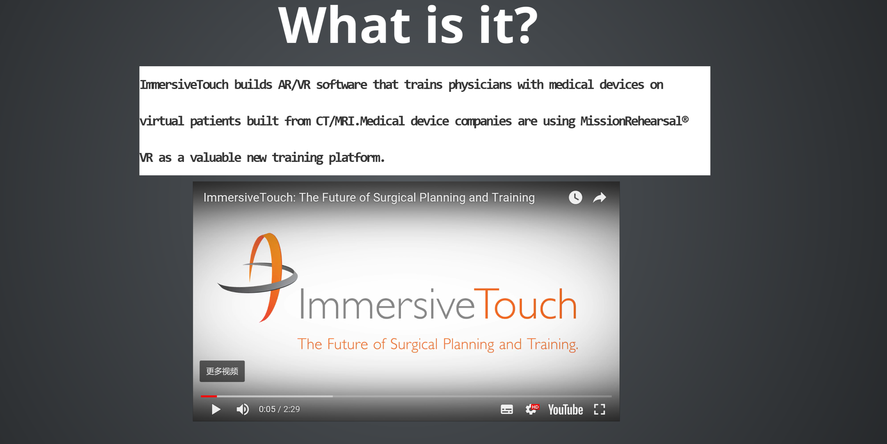
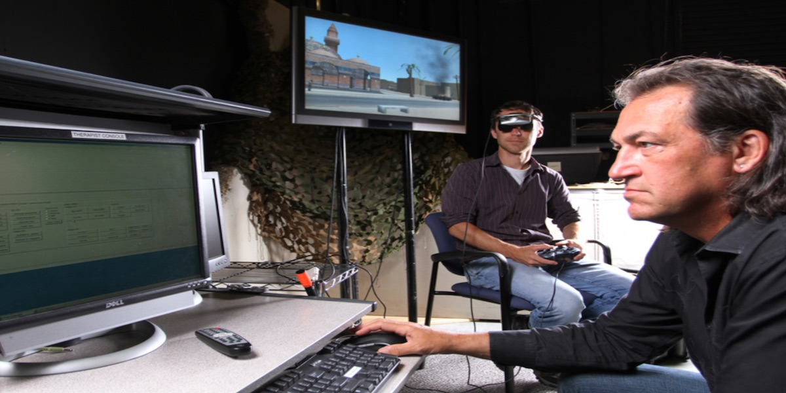

| Submit time | Student | Topic | Professor note |
| Student | Topic | Scheduled presentation | Link presentation | Report |
| Jonathan Bouligny | Gloveone : Feel Virtual Reality | Feb 6 | !Report | |
| Jakob Dozier | ARKit: Augmented Reality for iOS | Feb 6 | Report | |
| Fox Bolduc | The Redirected Walking Toolkit | Feb 6 | !Report | |
| Simon Woldemichael | Nvidia's Holodeck:
Photorealistic collaborative design |
Feb 6 | Report | |
| Mayur Bhakta | ENGAGE: social education and presentation platform | Feb 8 | !Report | |
| Coe, Jordan J | NextVR | Feb 8 | Report | |
| Darien Sokolov | SoundStage | Feb 8 | Report | |
| Ge, Wenhao | ImmersiveTouch: The Future of Surgical Planning and Training | Feb 8 |  | [LATE] Report |
| Myers, Trent | Oculus Touch - Hand Presence Technology | Feb 13 | Report | |
| Prerit Datta | DAQRI Headsets | Feb 13 |
|
Report |
| Athaa Bader M Alotaibi | Osso VR | Feb 13 | Report | |
| Im, Cheol Hwan | Mira Prism AR Headset | Feb 13 | Report | |
| Jessica Hao | VR & AR - Goes For Gold At 2018 Winter Olympic Games | Feb 13 | !Report | |
| Wesley Scott | A Walk Through Dementia. | Feb 15 | !Report | |
| Travis, Ahlberg | Google's Tilt Brush | Feb 15 | Report | |
| Reynaldo Garcia | Sketch AR Art with Mixed Reality | Feb 15 | Report | |
| Acosta, Michael | Meta 2 AR Headset Let Us Touch and Feel Holograms | Feb 15 |
| Report |
| Gantaphon Chalumporn | Vive Tracker | Feb 15 | Report | |
| Tien Dang | Varjo: The Resolution Revolution is on | March 20 | Report | |
| Matthew Jordan | Microsoft HoloLens | March 20 | Report | |
| Xujia wu | Ghostbusters: Dimension Hyper-Reality Gameplay Trailer - THE VOID | March 20 | Report | |
| Lino Abiel Virgen Gracia | Home- FOVE Eye Tracking Virtual Reality Headset | March 20 |
|
Report |
| Thomas Sanchez | Mario Kart Arcade GP VR | March 22 | Report (Good report) | |
| Derek Fritz | LooxidVR | March 22 | Report | |
| Garcia, Eddie | Avegant Headset | April 3 | Report | |
| Omekam, Olisa | Neurable: control VR with your mind | April 3 | NOT RECEIVED | |
| Huber, Christine | AR-Assisted Piano Improvisation | April 3 | Report | |
| Luis Rausseo | Laboratory Simulations for Educators to Empower their STEM Students | April 3 | Report | |
| Amitsingh Pardeshi | 360 Degree (Omnidirectional) Treadmills from Virtuix | April 3 | Report | |
| Wolff, Luciano | BraveMind VR | April 5 |  | Report |
| Blechman, Scott | Quartz: News Stories in AR | April 5 | Report | |
| Taylor, Megan | Tribemix Virtual Reality for Dementia Care | April 5 | Report | |
| Emre Unal | Aero Glass | April 5 | Report | |
| Cody Otterbine | The Business of Virtual Reality Arcades | Link | Late | |
| Manahan, Kevon | Smart Cities Dive | LATE (May 7) | ||
| Jijun Sui | Leap Motion | LATE (May 7) | ||
| David Cooper | Google ARCore | !Report | ||
| Joyelle A. Woodson | VRgluv: Force Feedback Gloves for Virtual Reality | !Report | ||
| Justin, Wright | VVR Teleoperation | Link | Report |
| Topic | Link |
| Roto VR – Interactive Virtual Reality Chair Roto VR enables its users to explore in all possible directions and discover the gravitational presence in a VR environment. Roto has been specifically designed for all HMDs. Instead of just using the headset to navigate around a space, the motorized chair allows one to rotate and turn in the virtual environment. This feature makes it perfect for coordination meetings or navigating through a space. |
|
| 360 Degree (Omnidirectional) Treadmills The treadmill I will be covering in depth is the Virtuix Omni, while comparing it to other existing treadmill solutions. The idea behind these treadmills in general is that a user is held (usually at the waist /chest) to insure they don't fall over when moving around. The Omni treadmill has little friction to enable the user to walk/run in any direction when used with the appropriate shoes and shoe trackers. The curvature of the treadmill makes it so that the user is moved towards the center when they are moving around. It simulates the movements in games/applications, even when the movements are running, walking or just crouching. Other systems such as Vue VR even support jumping on top of the other movements. The nice thing about the Virtuix Omni and similar systems is how little room they consume, just like treadmills at a gym, where you can have multiple side by side (as shown below). |
|
| Birdly – Ultimate Dream of Flying a full-body virtual reality flight simulator that uses multi-hinged flaps and motion feedback to give you a taste of flying like a bird. Birdly includes a fan in front of the user that regulates the speed of the headwind based on how fast you’re flying. |
|
| Magic Bench Magic Bench allows for a group to share the same augmented environment with any computer-generated graphics and interact in a shared story sequence through a third-person POV. It’s a combined augmented and mixed reality experience. But, what makes this experience interesting is that it does not involve wearing a head-mounted display (HMD) or using a handheld device. Instead, the surroundings are instrumented rather than the individual, allowing people to share the magical experience as a group. |
|
| Osso VR Osso VR is a virtual reality application that uses the Oculus Rift to simulate device procedures and try to replace the current methods. As stated in the video, it’s common for an orthopaedic surgeon to go to a training seminar where demoes are provided by the device manufacturers and the surgeons get to use the device on a cadaver. Then, if the surgeon likes it, the next time they’ll interact with the device will usually be in surgery 4-6 months down the line. By having a VR environment, a surgeon would not only be able to cut out the 2 day seminar to try out the device, as the training would be available to them with the software, but it would also allow them to repeat the procedure many times to help them overcome the learning curve of the complicated procedure. Note: Software |
|
| Sketch AR | Art with Mixed Reality SketchAR is an application that applied Augmented Reality to create art works in real world. When the user is using the device, he will be able to draw images, just like tracing. The image outline is projected on the selected space, which will be used as the canvas. This app is a very simple but effective usage of augmented reality. While this can be used as a fun application, it can also help people to create high quality copies of existing art and also reproduce them easily on a massive scale. This application is also available for other platforms such as iOS, Android, etc. But among all these, Hololens seems to be the most suitable place to use this app. Note: Software |
|
| eSight | |
| Vive Tracker | |
| BraveMind VR | |
| VR Teleoperation | |
| Mira Prism AR Headset | |
| NOLO VR | |
| ZephVR | |
| Tribemix Virtual Reality for Dementia Care | |
| Hyperbolic Space in Virtual (Un)reality | |
| LiveMap | |
| Snapchat Spectacles | |
| ImmersiveTouch: The Future of Surgical Planning and Training | |
| Aero glass: | |
| Gloveone: Feel Virtual Reality | |
| Neurable: control VR with your mind | |
| Why Virtual Reality Could Help Treat Alzheimer's and Chronic Pain | |
| Facial Performance Sensing Head-Mounted Display (SIGGRAPH 2015) Note: Research paper |
|
| High-Fidelity Facial and Speech Animation for VR HMDs (SIGGRAPH Asia 2016) Note: Research paper |
|
| FINEXUS finger tracking in VR (CHI '16) Note: Research paper |
|
| Google Tango | https://developers.google.com/tango/ |